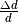
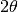
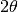
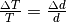
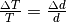

EstimateResolutionDiffraction dialog.
Table of Contents
| Name | Direction | Type | Default | Description |
|---|---|---|---|---|
| InputWorkspace | Input | MatrixWorkspace | Mandatory | Name of the workspace to have detector resolution calculated |
| DivergenceWorkspace | Input | MatrixWorkspace | Workspace containing the divergence | |
| OutputWorkspace | Output | MatrixWorkspace | Mandatory | Name of the output workspace containing delta(d)/d of each detector/spectrum |
| DeltaTOF | Input | number | Mandatory | DeltaT as the resolution of TOF with unit microsecond |
| Wavelength | Input | number | Optional | Wavelength setting in Angstroms. This overrides what is in the dataset. |
| PartialResolutionWorkspaces | Output | WorkspaceGroup | Mandatory | Workspaces created showing the various resolution terms |
Resolution of a detector in d-spacing is defined as , which is constant for an individual detector.
Starting from the Bragg equation for T.O.F. diffractometer,

as

and thus

where,
 is the time resolution from moderator
is the time resolution from moderator is the coverage of the detector, and can be
approximated from the square root of the solid angle of the detector
to sample
is the coverage of the detector, and can be
approximated from the square root of the solid angle of the detector
to sample is the flight path of the neutron from source to detector
is the flight path of the neutron from source to detector is half the Bragg angle , or half of the angle from the downstream beam
is half the Bragg angle , or half of the angle from the downstream beamThe optional DivergenceWorkspace specifies the values of
to use rather than those derived from the solid
angle of the detectors. EstimateDivergence can be used for estimating the divergence.
PartialResolutionWorkspaces is a collection of partial resolution
functions where _tof is the time-of-flight term, _length is
the path length term, and _angle is the angular term. Note that
the total resolution is these terms added in quadriture.
Note that  . When fitting peaks in time-of-flight the resolution is .
. When fitting peaks in time-of-flight the resolution is .
Example - estimate PG3 partial detectors’ resolution:
# Load a Nexus file
Load(Filename="PG3_2538_2k.nxs", OutputWorkspace="PG3_2538")
# Run the algorithm to estimate detector's resolution
EstimateResolutionDiffraction(InputWorkspace="PG3_2538", DeltaTOF=40.0, OutputWorkspace="PG3_Resolution",
PartialResolutionWorkspaces="PG3_Resolution_partials")
resws = mtd["PG3_Resolution"]
print("Size of workspace 'PG3_Resolution' = {}".format(resws.getNumberHistograms()))
print("Estimated resolution of detector of spectrum 0 = {:.14f}".format(resws.readY(0)[0]))
print("Estimated resolution of detector of spectrum 100 = {:.14f}".format(resws.readY(100)[0]))
print("Estimated resolution of detector of spectrum 999 = {:.14f}".format(resws.readY(999)[0]))
Output:
Size of workspace 'PG3_Resolution' = 1000
Estimated resolution of detector of spectrum 0 = 0.00323913137315
Estimated resolution of detector of spectrum 100 = 0.00323608260137
Estimated resolution of detector of spectrum 999 = 0.00354849176520
See also
Algorithms EstimateDivergence v1, CalibrateRectangularDetectors v1 and GetDetOffsetsMultiPeaks v1
Categories: AlgorithmIndex | Diffraction\Utility
C++ header: EstimateResolutionDiffraction.h (last modified: 2020-03-20)
C++ source: EstimateResolutionDiffraction.cpp (last modified: 2020-04-07)
 :
: